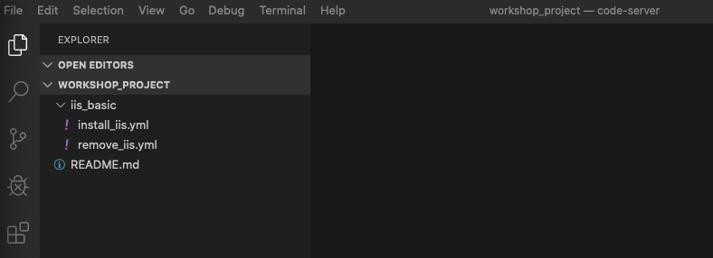
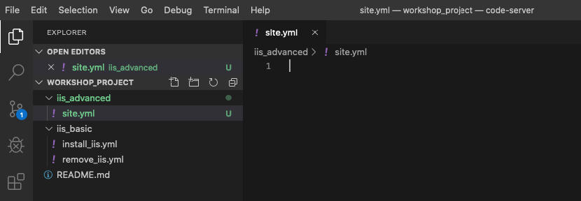
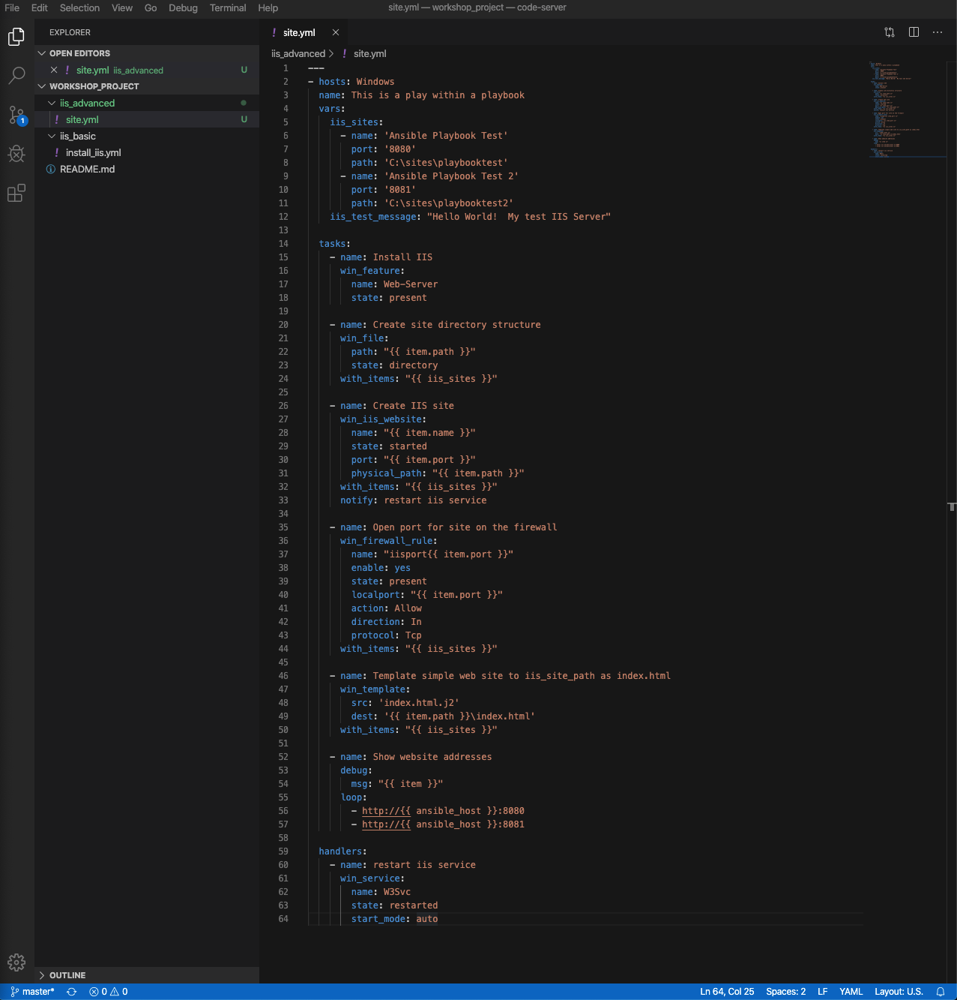
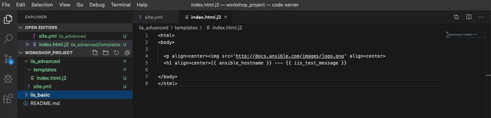
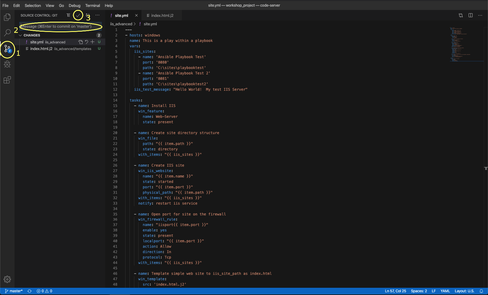
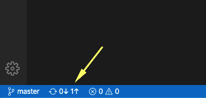
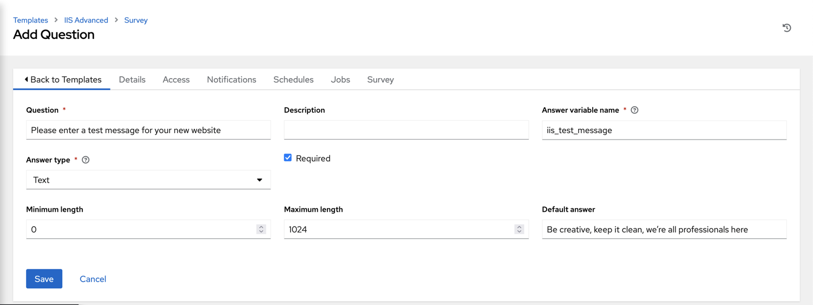
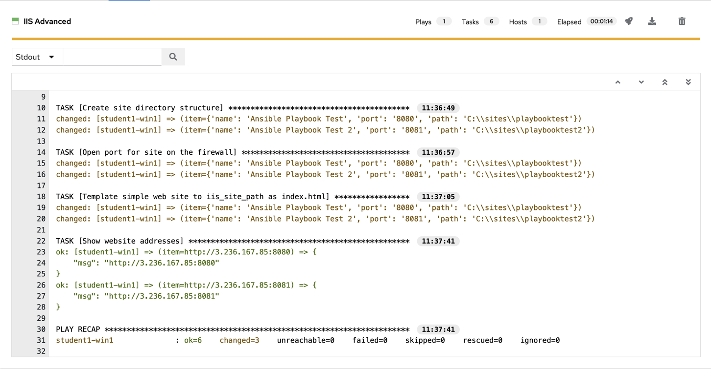

4 - Advanced playbook concepts
Previous exercises showed you the basics of Ansible playbooks. In the next few exercises, we are going to teach some more advanced ansible skills that will add flexibility and power to your automation.
Ansible exists to make tasks simple and repeatable. We also know that not all systems are exactly alike and often require some slight change to the way an Ansible playbook is run. Enter variables.
Variables are how we deal with differences between your systems, allowing you to account for a change in port, IP address or directory, etc..
Loops enable us to repeat the same task over and over again. For example, lets say you want to start multiple services, install several features, or create multiple directories. By using an ansible loop, you can do that in a single task.
Handlers are the way in which we restart services. Did you just deploy a new config file, install a new package? If so, you may need to restart a service for those changes to take effect. We do that with a handler.
For a full understanding of variables, loops, and handlers; check out the Ansible documentation on these subjects.
To begin, we are going to create a new playbook, but it should look very familiar to the one you already created before.
Step 1 - Create directory structure
Within Visual Studio Code, create a new directory in your git repo and
create a site.yml file.
In the Explorer accordion you should have a WORKSHOP_PROJECT section where
you previously made iis_basic.

Create a folder called iis_advanced and a file called site.yml
Hover over the WORKSHOP_PROJECT section and click the New Folder button
Type iis_advanced and hit enter. Now, click that folder so it is
selected.
Right-click the iis_advanced folder and select New File.
Type site.yml and hit enter.
You should now have an editor open in the right pane that can be used for creating your playbook.

Step 2 - Play definition
Add a play definition and some variables to your playbook. These include addtional packages your playbook will install on your web servers, plus some web server specific configurations.
---
- name: This is a play within a playbook
hosts: windows
vars:
iis_sites:
- name: 'Ansible Playbook Test'
port: '8080'
path: 'C:\sites\playbooktest'
- name: 'Ansible Playbook Test 2'
port: '8081'
path: 'C:\sites\playbooktest2'
iis_test_message: "Hello World! My test IIS Server"
Step 3 - Add tasks
Add a new task called install IIS. After writing the playbook, click File Save to save your changes.
tasks:
- name: Install IIS
ansible.windows.win_feature:
name: Web-Server
state: present
- name: Create site directory structure
ansible.windows.win_file:
path: "{{ item.path }}"
state: directory
loop: "{{ iis_sites }}"
- name: Create IIS site
community.windows.win_iis_website:
name: "{{ item.name }}"
state: started
port: "{{ item.port }}"
physical_path: "{{ item.path }}"
loop: "{{ iis_sites }}"
notify: restart iis service
Did you spot that we used two different Ansible collections?
This is not an error, the Windows modules are stored in two collections, ansible.windows and community.windows.
Which may seem odd, but this makes sense (if know about the background).
The modules in the ansible.windows collection are certified by Red Hat, if any bugs happen in those modules, Red Hat will fix them as part of the AAP subscription.
The modules in the community.windows collection are community-maintained, bug fixes must come from Open Source contributors (which are as fast or even faster than Red Hat itself). As development is much fast in the Open Source community, this collections has even more modules than the other Windows collection!

What is happening here!?
vars:You’ve told Ansible the next thing it sees will be a variable nameiis_sitesYou are defining a list-type variable called iis_sites. What follows is a list of each site with it’s related variableswin_file:This module is used to create, modify, delete files, directories, and symlinks.{{ item }}You are telling Ansible that this will expand into a list item. Each item has several variables likename,portandpath.loop: "{{ iis_sites }}This is your loop which is instructing Ansible to perform this task on everyiteminiis_sitesnotify: restart iis serviceThis statement is ahandler, so we’ll come back to it in Section 3.
Add a task to open the firewall and deploy some files. After that, you will define a task to start the IIS service.
Create a templates directory in your project directory and create a template as follows:
Ensure your iis_advanced folder is highlighted and then hover over the WORKSHOP_PROJECT section and click the New Folder button
Type templates and hit enter. The right-click the templates folder and click the New File button.
Type index.html.j2 and hit enter.
You should now have an editor open in the right pane that can be used for creating your template. Enter the following details:
<html>
<body>
<p align=center><img src='http://docs.ansible.com/images/logo.png' align=center>
<h1 align=center>{{ ansible_host }} --- {{ iis_test_message }}</h1>
</body>
</html>

Edit back your playbook, site.yml, by opening your firewall ports and
writing the template. Use single quotes for win_template in order to
not escape the forward slash.
- name: Open port for site on the firewall
community.windows.win_firewall_rule:
name: "iisport{{ item.port }}"
enable: yes
state: present
localport: "{{ item.port }}"
action: Allow
direction: In
protocol: Tcp
loop: "{{ iis_sites }}"
- name: Template simple web site to iis_site_path as index.html
ansible.windows.win_template:
src: 'index.html.j2'
dest: '{{ item.path }}\index.html'
loop: "{{ iis_sites }}"
- name: Show website addresses
ansible.builtin.debug:
msg: "{{ item }}"
loop:
- http://{{ ansible_host }}:8080
- http://{{ ansible_host }}:8081
So… what did I just write?
win_firewall_rule:This module is used to create, modify, and update firewall rules.win_template:This module specifies that a jinja2 template is being used and deployed.loop:used in Ansible to run a task multiple times. Expects a list, which can be provided directly (as in the last task) or in a variable.debug:Again, like in theiis_basicplaybook, this task displays the URLs to access the sites we are creating for this exercise.
Step 4 - Define and Use Handlers
There are any number of reasons we often need to restart a service/process including the deployment of a configuration file, installing a new package, etc. There are really two parts to this Section; adding a handler to the playbook and calling the handler after a task. We will start with the former.
The handlers block should start after a one-level indentation, that
is, two spaces. It should align with the tasks block.
handlers:
- name: restart iis service
ansible.windows.win_service:
name: W3Svc
state: restarted
start_mode: auto
You can’t have a former if you don’t mention the latter
handler:This is telling the play that thetasks:are over, and now we are defininghandlers:. Everything below that looks the same as any other task, i.e. you give it a name, a module, and the options for that module. This is the definition of a handler.notify: restart iis service…and here is your latter. Finally! Thenotifystatement is the invocation of a handler by name. Quite the reveal, we know. You already noticed that you’ve added anotifystatement to thewin_iis_websitetask, now you know why.- the order of
tasksandhandlersis not important, you could define Handlers above the tasks. Ansible knows what to do with both of them.
Step 5 - Commit and Review
Your new, improved playbook is done! But remember we still need to commit the changes to source code control.
Click File → Save All to save the files you’ve written
Click the Source Code icon (1), type in a commit message such as Adding advanced playbook (2), and click the check box above (3).

Sync to gitlab by clicking the arrows on the lower left blue bar. When
prompted, click OK to push and pull commits.

It should take 5-30 seconds to finish the commit. The blue bar should stop rotating and indicate 0 problems…
Now let’s take a second look to make sure everything looks the way you intended. If not, now is the time for us to fix it up. The playbook below should execute successfully.
---
- name: This is a play within a playbook
hosts: windows
vars:
iis_sites:
- name: 'Ansible Playbook Test'
port: '8080'
path: 'C:\sites\playbooktest'
- name: 'Ansible Playbook Test 2'
port: '8081'
path: 'C:\sites\playbooktest2'
iis_test_message: "Hello World! My test IIS Server"
tasks:
- name: Install IIS
ansible.windows.win_feature:
name: Web-Server
state: present
- name: Create site directory structure
ansible.windows.win_file:
path: "{{ item.path }}"
state: directory
loop: "{{ iis_sites }}"
- name: Create IIS site
community.windows.win_iis_website:
name: "{{ item.name }}"
state: started
port: "{{ item.port }}"
physical_path: "{{ item.path }}"
loop: "{{ iis_sites }}"
notify: restart iis service
- name: Open port for site on the firewall
community.windows.win_firewall_rule:
name: "iisport{{ item.port }}"
enable: yes
state: present
localport: "{{ item.port }}"
action: Allow
direction: In
protocol: Tcp
loop: "{{ iis_sites }}"
- name: Template simple web site to iis_site_path as index.html
ansible.windows.win_template:
src: 'index.html.j2'
dest: '{{ item.path }}\index.html'
loop: "{{ iis_sites }}"
- name: Show website addresses
ansible.builtin.debug:
msg: "{{ item }}"
loop:
- http://{{ ansible_host }}:8080
- http://{{ ansible_host }}:8081
handlers:
- name: restart iis service
ansible.windows.win_service:
name: W3Svc
state: restarted
start_mode: auto
Step 6 - Create Job template
Before we can create our Job Template, you must first go resync your Project again. So do that now.
Tip
You must do this anytime you create a new base playbook file that you will be selecting via a Job Template. The new file must be synced to Controller before it will become available in the Job Template playbook dropdown.
To test this playbook, we need to create a new Job Template to run this
playbook. So go to Template and click Add and select Job Template
to create a second job template.
Complete the form using the following values, replace username as before.:
Danger
Your playbook targets the windows group. We have all test hosts in the inventory Workshop Example CC, you must place a limit on your job template!
If you target the complete windows group, you will automate all hosts, even those of your colleagues!
| Key | Value | Note |
|---|---|---|
| Name | IIS Advanced username | |
| Description | Template for iis_advanced | |
| Job Type | Run | |
| Inventory | Workshop Example CC | |
| Project | Ansible Workshop Project username | |
| Execution Environment | BSS EE - Windows | |
| Playbook | iis_advanced/site.yml |
|
| Credentials | Azure DevOps username | |
| Limit | Your single host as in your local inventory! | Do not target the windows group! |
| Options | Enable Fact Storage |
Danger
Did you set the limit?
Click SAVE  and on the following page, select the Survey tab.
and on the following page, select the Survey tab.
Create a new survey with following values:
| Key | Value | Note |
|---|---|---|
| Question | Please enter a test message for your new website | |
| Description | Website test message prompt | |
| Answer Variable Name | iis_test_message |
|
| Answer Type | Text | |
| Minimum/Maximum Length | Keep the defaults | |
| Default Answer | Be creative, keep it clean, we’re all professionals here |

Select SAVE and remember to flip the On switch
Step 7 - Run new playbook
Now let’s run it and see how it works.
Select TEMPLATES.
Note
Alternatively, if you haven’t navigated away from the job templates creation page, you can scroll down to see all existing job templates.
Click the rocketship icon  for the IIS Advanced Job Template.
for the IIS Advanced Job Template.
When prompted, enter your desired test message.
After it launches, you should be redirected and can watch the output of the job in real time.
When the job has successfully completed, you should see two URLs to your websites printed at the bottom of the job output.
